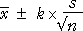
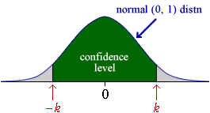
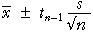

Confidence interval for a mean
If the population standard deviation, σ, is a known value, a confidence interval for a population mean, µ has the form

The value k arises from the standard normal distribution,

The value k = 1.96 gives a confidence level of 95%, but different confidence levels can be found with other values of k.
| k | Confidence level |
|---|---|
| 1 | 0.683 |
| 2 | 0.954 |
| 3 | 0.997 |
| 1.645 | 0.90 |
| 1.960 | 0.95 |
| 2.576 | 0.99 |
Although 95% confidence intervals are most commonly reported, sometimes k is chosen to give a 90% or 99% confidence interval.
Estimating a population mean (unknown standard deviation)
When the population standard deviation, σ, is unknown, a 95% confidence interval for µ has the form

where tn-1 is obtained from a table. Changing the confidence level to 90% or 99% involves changing this constant. The appropriate value can again be obtained from a table. (We give no further details here.)